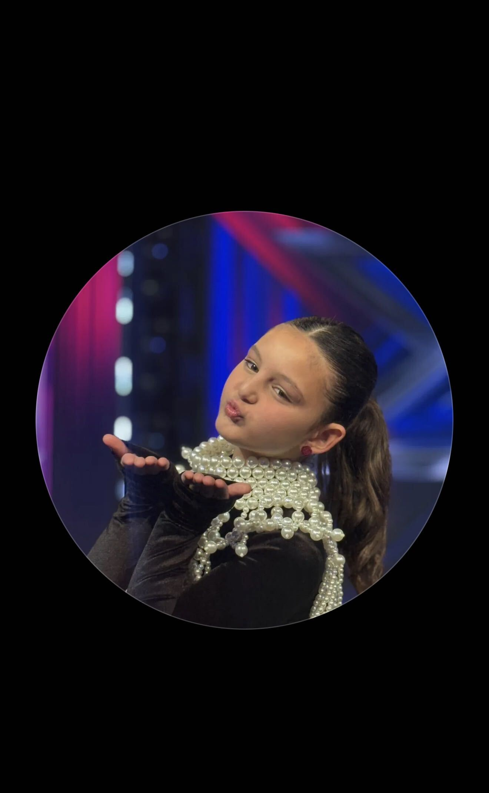
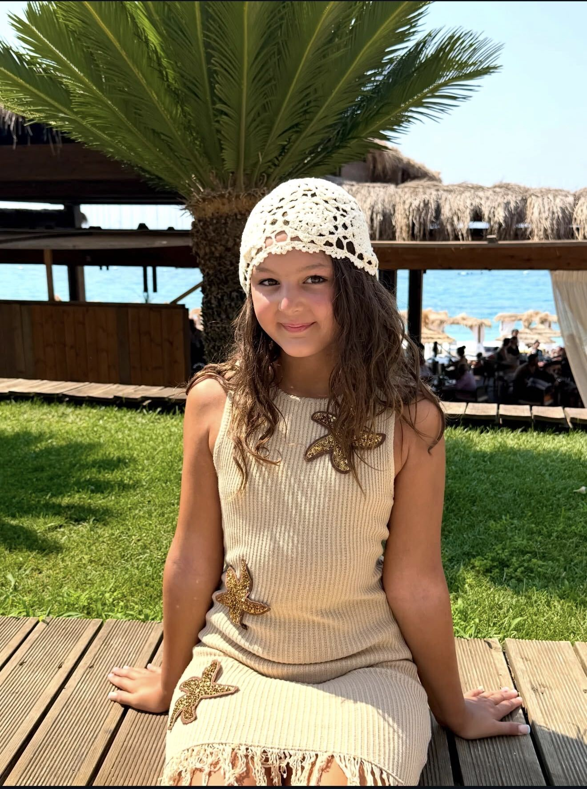

Rose-May
Top 6 on X Factor Kids Albania
Big voice. Bigger dreams.
Rose-May is a young singer with a voice that makes people stop and listen. She sang her way through 11 weeks of live shows on X Factor Kids Albania to finish in the Top 6, and her viral duets have been watched millions of times online. Whether it's a TV stage or a busy shopping street, she's always ready to sing.
Viral moments
 2.4M views
2.4M views
Surprise street duet with busker Luke Silva
"Die With a Smile" by Bruno Mars & Lady Gaga
Out shopping with her mum, Rose-May decided to join busker Luke Silva for a duet, and 2.4 million viewers couldn't believe the voice that came out.
 1M views
1M views
Duet with pianist Thibault_Piano (opens on YouTube in a new tab)
Rose-May sang alongside Thibault_Piano, and the video passed a million views.
On the X Factor stage
Live performances from X Factor Kids Albania.
-

If I Ain't Got You (opens on YouTube in a new tab)
Rose-May takes on the Alicia Keys soul classic, one of her standout nights on the show.
-

Is It Love (opens on YouTube in a new tab)
The song she sang on the very first live show.
-

More from the X Factor stage (opens on YouTube in a new tab)
Another of her performances from the show.

Follow Rose-May
New videos, performances and behind the scenes.